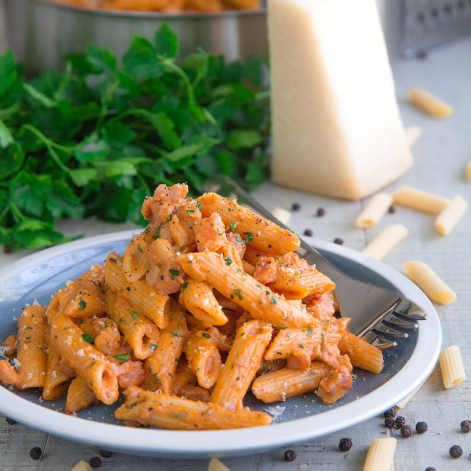

Penne Alla Vodka

A dish of delicious penne pasta blended with rich creamy vodka sauce
Ingredients
- 2 tablespoons olive oil
- 2 cloves garlic, minced
- 1 (28 ounce) can whole peeled tomatoes
- 1/2 cup chopped fresh basil
- salt and pepper to taste
- 1/4 cup vodka
- 1 pound penne pasta
- 1 pint heavy cream
Directions
-
Step 1In a large skillet over medium heat, cook garlic in olive
oil until tender, 1 to 2 minutes. Stir in tomatoes, breaking up a bit
with fork. Stir in basil, salt and pepper and simmer 15 minutes. Stir in
vodka and cook 15 minutes more
-
Step 2Bring a large pot of lightly salted water to a boil. Add
pasta and cook for 8 to 10 minutes or until al dente; drain
-
Step 3Stir cream into sauce and cook 10 minutes more. Toss with
hot pasta